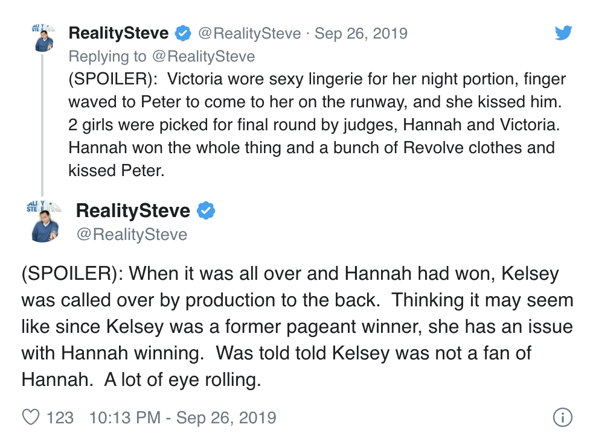

Knoxville’s Hannah Ann Sluss was in the middle of the drama again this week on “The Bachelor.”
Despite the drama, bachelor Peter Weber confessed his feelings for Sluss, saying, "I really like you."
During the first cocktail party, Sluss saw a bottle of champagne next to a fireplace and decided to take advantage of her time with Weber. The two popped the champagne, which upset contestant Kelsey Weier. Weier, who had brought a bottle of champagne from home to share with Weber, thought Sluss had stolen her moment.
“That was supposed to be my moment and she took that from me,” Weier said.
Sluss and Weier got into drama at the cocktail party. When Weier thought Sluss had opened her champagne, she ran away crying and refused to talk to Weber.
“I just feel like two moments have been taken from me,” Weier said, referencing the group date earlier in the week.
Sluss apologized to Weier, but she didn’t accept the apology.
“I had no idea, I would have never done that,” Sluss said.
“I think she knew what she was doing,” Weier said.
A few minutes later, Weier and Weber found the original bottle of champagne — apparently, there were two bottles and Weier’s bottle was untouched.
Weier, however, still couldn’t move on.
She confronted Sluss again, and Sluss seemed confused.
“We literally barely have talked,” Sluss said.
Sluss was selected to go on the next group date, which was a fashion show with the brand Revolve. The women got to pick out their own outfits, and Sluss chose to wear a wedding dress and veil.
Victoria Fuller, not to be outdone, kissed Weber on the runway. Sluss and Fuller were selected as the top two, and walked the runway once more wearing the same dress.
Sluss was picked as the winner and she was given several bags of Revolve clothing. Fuller was immediately upset about the loss.
“I’m done, I don’t want to be here anymore,” Fuller said. Weber pulled Fuller aside and told her that he wanted her to be there.
“I know that you are not like any of the girls here,” Weber said.
Weber also pulled Sluss aside for some alone time after the group date. She talked about how she felt after the "champagne scandal," saying she felt bullied. Weber came to her defense and said he wouldn't tolerate bullying among the contestants.
"I really like you," he told her. The two kissed before returning to the rest of the group.
Fuller got the second group date rose, but Weber confronted Weier about Sluss' comments.
Weier confessed that she didn't get along with Sluss but felt like she hadn't been a bully.
"I don't know who to believe right now," Weber said.
The show ended with Weier crying in the bathroom, and Bachelor Nation will have to wait until next week to see who Weber chooses.